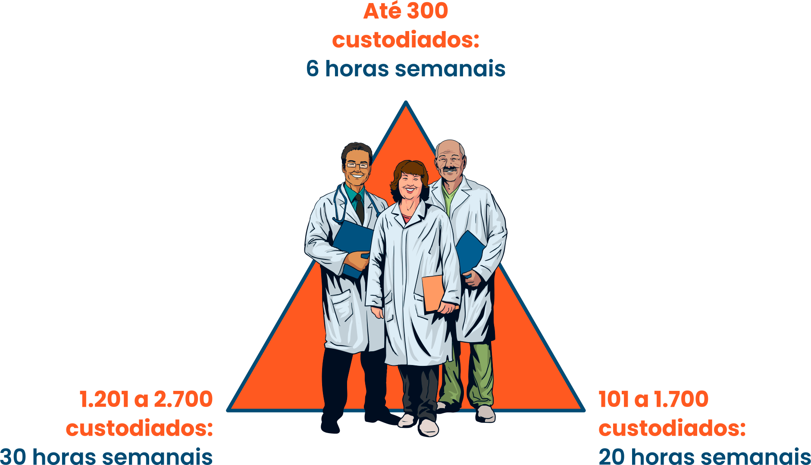

Conforme vimos, o número de pessoas privadas de liberdade em um estabelecimento prisional e o perfil epidemiológico de tal população determinarão as modalidades de equipe, bem como suas cargas horárias. Sendo assim, a organização das equipes nas modalidades especificadas definirá, também, o montante financeiro a ser repassado aos partícipes da pactuação.
